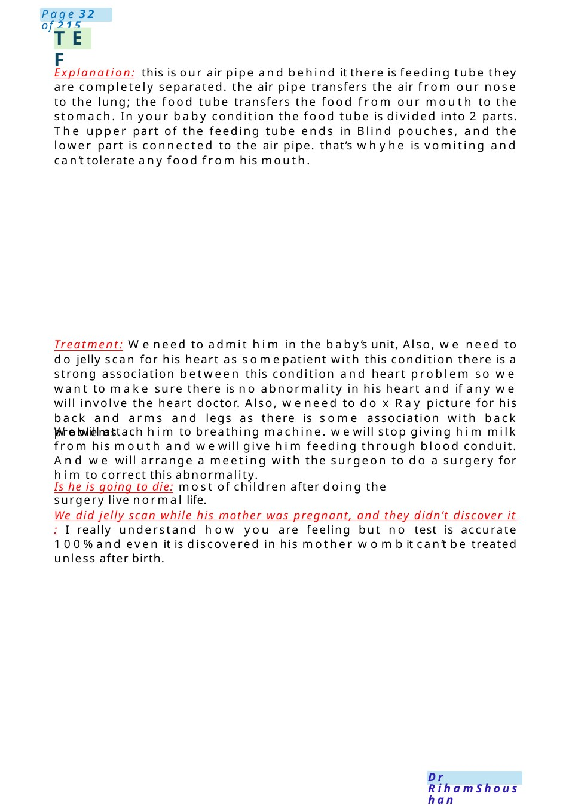

TEF
Explanation: this is our air pipe and behind it there is feeding tube they are completely separated. the air pipe transfers the air from our nose to the lung; the food tube transfers the food from our mouth to the stomach. In your baby condition the food tube is divided into 2 parts. The upper part of the feeding tube ends in Blind pouches, and the lower part is connected to the air pipe. that’s whyhe is vomiting and can’t tolerate any food from his mouth. Treatment: Weneed to admit him in the baby’s unit, Also, we need to do jelly scan for his heart as somepatient with this condition there is a strong associatio…
Scenario Summary
Explanation: this is our air pipe and behind it there is feeding tube they are completely separated. the air pipe transfers the air from our nose to the lung; the food tube transfers the food from our mouth to the stomach. In your baby condition the food tube is divided into 2 parts. The upper part of the feeding tube ends in Blind pouches, and the lower part is connected to the air pipe. that’s whyhe is vomiting and can’t tolerate any food from his mouth. Treatment: Weneed to admit him in the baby’s unit, Also, we need to do jelly scan for his heart as somepatient with this condition there is a strong associatio…
Full Original Scenario

TEF
Explanation: this is our air pipe and behind it there is feeding tube they are completely separated. the air pipe transfers the air from our nose to the lung; the food tube transfers the food from our mouth to the stomach. In your baby condition the food tube is divided into 2 parts. The upper part of the feeding tube ends in Blind pouches, and the lower part is connected to the air pipe. that’s whyhe is vomiting and can’t tolerate any food from his mouth.
Treatment: Weneed to admit him in the baby’s unit, Also, we need to do jelly scan for his heart as somepatient with this condition there is a strong association between this condition and heart problem so we want to make sure there is no abnormality in his heart and if any we will involve the heart doctor. Also, weneed to do x Ray picture for his back and arms and legs as there is some association with back problems.
Wewill attach him to breathing machine. wewill stop giving him milk from his mouth and wewill give him feeding through blood conduit. And we will arrange a meeting with the surgeon to do a surgery for him to correct this abnormality.
Is he is going to die: most of children after doing the surgery live normal life.
We did jelly scan while his mother was pregnant, and they didn’t discover it : I really understand how you are feeling but no test is accurate 100%and even it is discovered in his mother wombit can’t be treated unless after birth.

Cleft Lip and Palate
First congratulations on the birth of the baby and rapport.
Explain what cleft lip and palate with drawing.
Problems from this condition with affection of feeding, however you can use special bottle designed for her condition and wewill arrange a meeting with the dietician for that, also it can affect her speech or hearing, for that wewill contact one of our team called SALTwho can also help her in problems regarding swallowing
.Causes for the condition are usually unknown, but maybe associated with other systems so, weneed to do some scans, maybe with alcohol, smoking, lack of some vitamins.
Time of surgical closure 3-6 for lip &6-12 for palate.
Advice for high dose of folic acid in next pregnancy.
TEAM:SALT, maxillofacial surgeon, ENT, dietician, dental, gene doctor if needed. − Will I have another baby with this condition, lets know first the reason behind it if needed we can arrange a meeting with a gene doctor. Provide photos for children before and after the surgery.